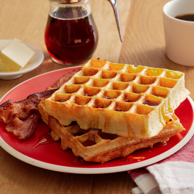

Old Fashioned Pancakes

Ingredients:
- 2 eggs
- 2 cups all-purpose flour
- 1,75 cups milk
- 0,5 cup vegetable oil
- 1 tablespoon sugar
- 4 teaspoons baking powder
- 0,25 teaspoon salt
- 0,5 teaspoon vanilla extract
Directions:
- Preheat waffle iron. Beat eggs in large bowl with hand beater until fluffy. Beat in flour, milk, vegetable oil, sugar, baking powder, salt and vanilla, just until smooth.
- Spray preheated waffle iron with non-stick cooking spray. Pour mix onto hot waffle iron. Cook until golden brown. Serve hot.
Back to homepage
Return to top